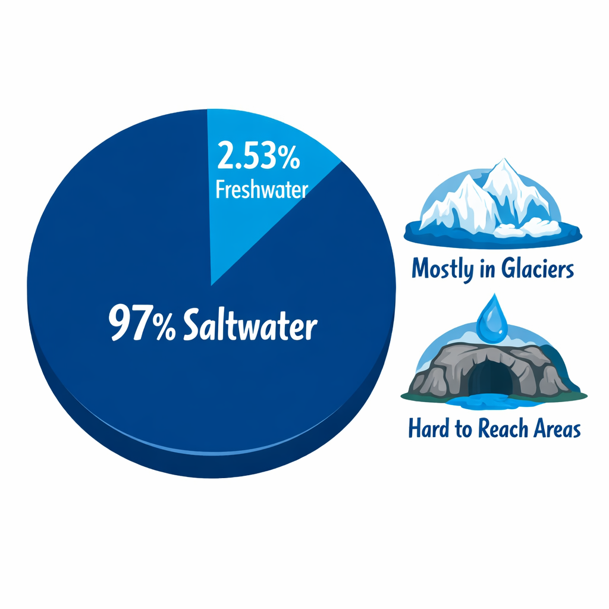
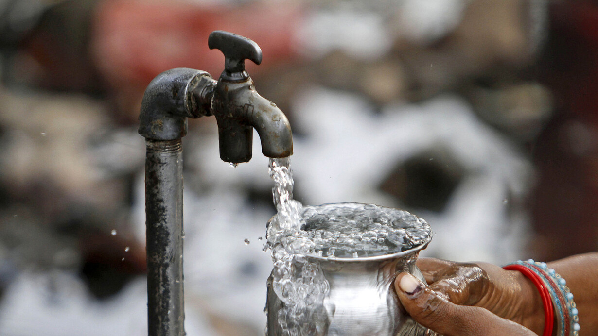

WATER LEAGUE
At Water League, we transform research into sustainable solutions to protect freshwater reserves and ensure access to drinking water.
Why is water important?
Water makes life possible. It sustains all living organisms and supports the ecosystems that keep the planet in balance. Without it, food cannot be produced, natural environments cannot function, and life as we know it would not exist. Although it is part of our everyday lives, its true importance is often overlooked.
Is water really abundant?
Although water covers most of the Earth’s surface, only a small fraction is available for human use. Approximately 97% of the planet’s water is saltwater, while just 2.5% is freshwater. Much of this freshwater is trapped in glaciers or located in areas that are difficult to access. As a result, usable water is limited, and its availability is increasingly affected by climate change, pollution, and unequal distribution.

How is water used?
Water is essential not only for survival but also for the functioning of human societies and natural systems. In the human body, it enables key processes such as nutrient transport, waste elimination, and temperature regulation. In plants, it is necessary for growth and photosynthesis. Globally, water use is distributed primarily across agriculture (70%), industry (15%), and domestic activities (15%). These uses highlight how deeply water is connected to food production, economic development, and everyday life.

Problem and purpose of the project
Despite its importance, millions of people worldwide lack access to safe drinking water. Consuming contaminated water can lead to serious and, in many cases, preventable illnesses. This situation, exacerbated by climate change, poses an urgent global challenge. In this context, Water League emerged as a project seeking to raise awareness about water as a limited resource. Its objective is to inform, encourage reflection, and promote responsible and sustainable use, recognizing that the future of the planet depends largely on the care of this vital resource.